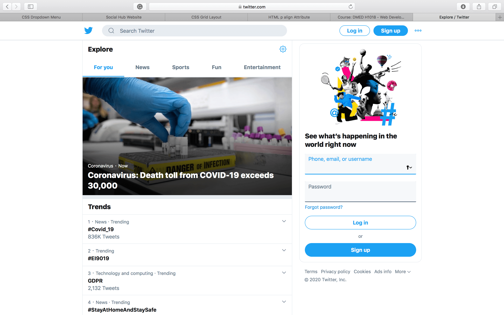
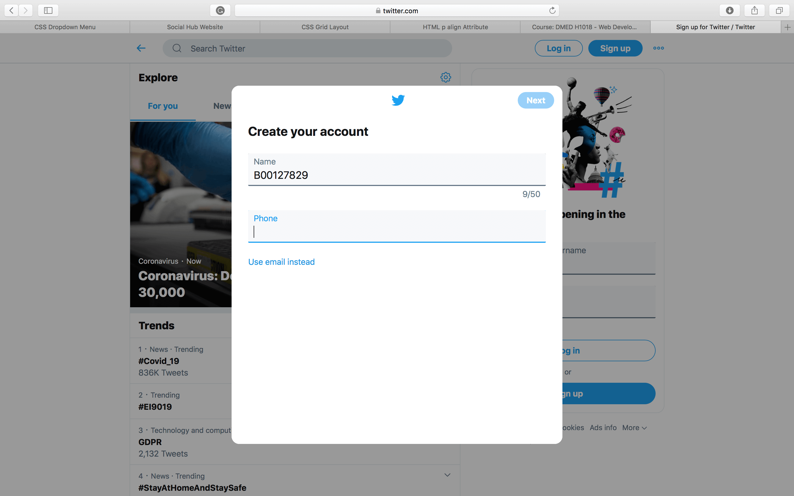
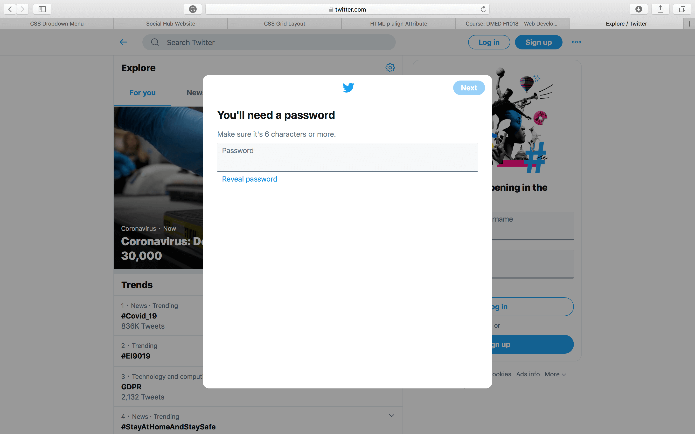
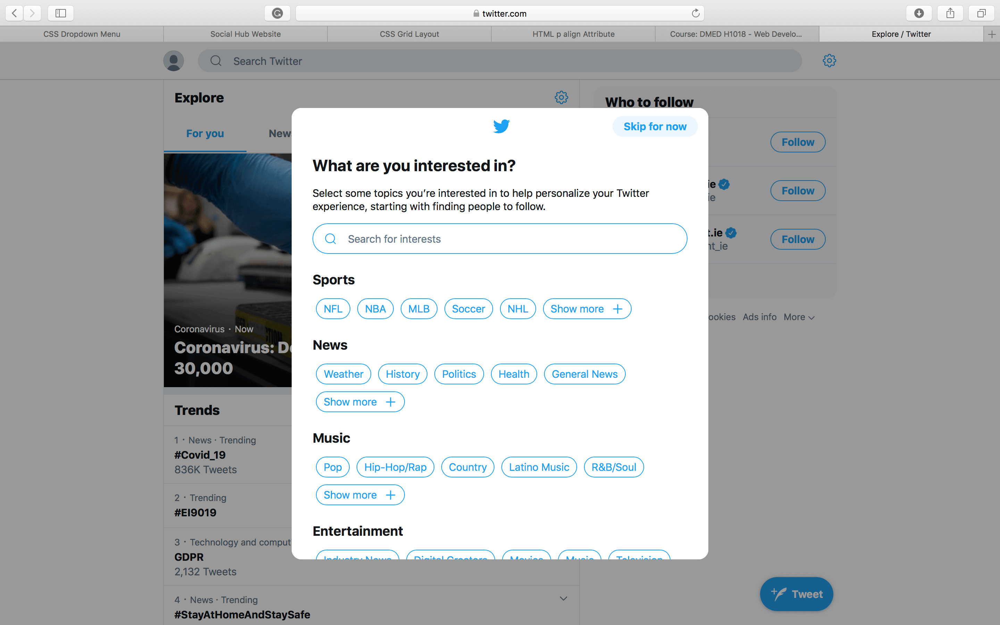
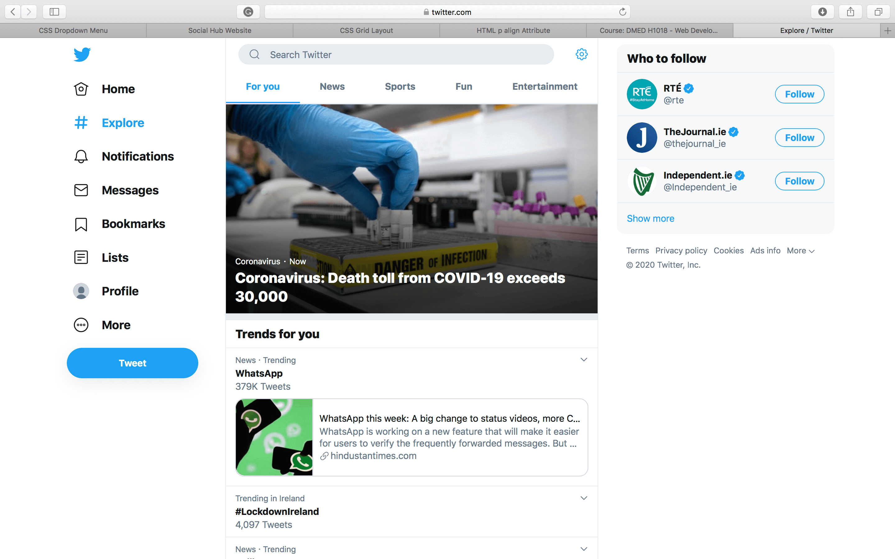
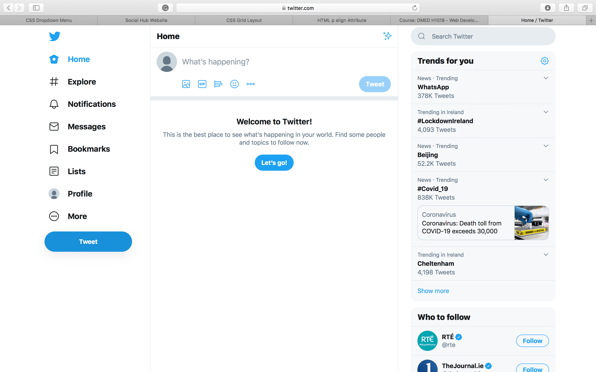
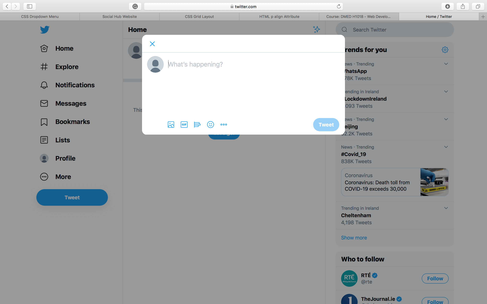
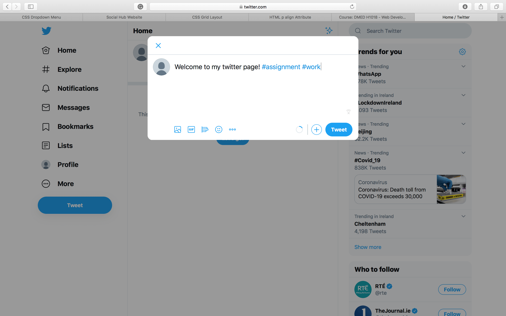
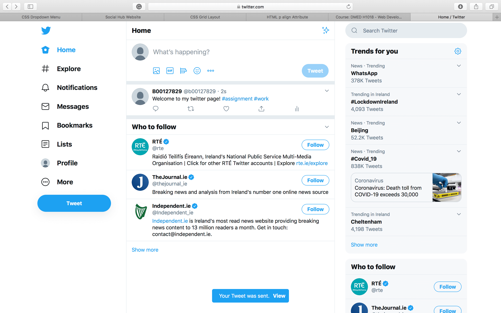

Twitter is an application that you can download on any android or apple phone through the app/play store for free. Twitter is a social media platform that allows you to post messages known as “tweets”, it allows you to like posts by other users and retweet their posts on your own page. Twitter was founded in 2006 in San Francisco. On twitter you can use the hashtag key before a relevant word, this allows your tweets to be found easier by other users. By clicking on a hashtag in a tweet it brings you to any other tweets that also include that word or phrase. Twitters logo since 2010 is of a white bird on a light blue background. The bird is said to be the “twitter bird” and that’s why the posts are called “tweets”, as that is the sound the bird would make so it makes sense.
*NOTE* You must be 13 or older according to twitter rules to set up an account and use the app
Registering an account for twitter is very easy to do, all you need is an email address or a phone number to get started and set the account up.
First either look up twitter on google, or download the app for free on the app or play store.
Then you will be asked to either sign into an existing account or create a new account.
When you press "sign up" you will be brought to a new page where you will need to create a username and put in either your phone number or email address. This is to verify that you are the person you say you are and so twitter may contact you incase something happens to your account.
You will need to verify your account by either inputting a verfication code sent to you by text or verify your account through an email.
Next step is to create a password to secure your new account, the password needs to be at least 6 letters long.
Once that is done you will be brought to a page which will ask you to selct certain topics that you are interested in. They do this to help you choose who to follow and what you like as it is your first time on the app.
Now you finally have a twitter account... enjoy tweeting.





Below I am going to tell you how to tweet on twitter in 4 easy steps...

STEP ONE- is to click on the tweet button.

STEP TWO- is to write your post!

STEP THREE- add any relevant hashtags that you may want to include and click tweet.

Then your tweet will appear on your home page.If you click on your blue hashtags it brings you to the page that shows all of the other tweets that include the same relevant word or phrase that you used.
Check out the education page to see how twitter can be used in Eduaction